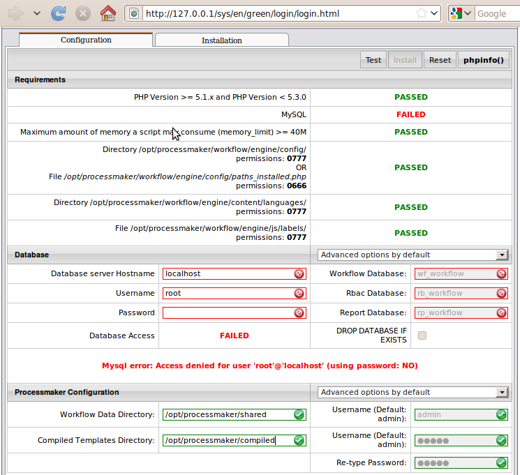
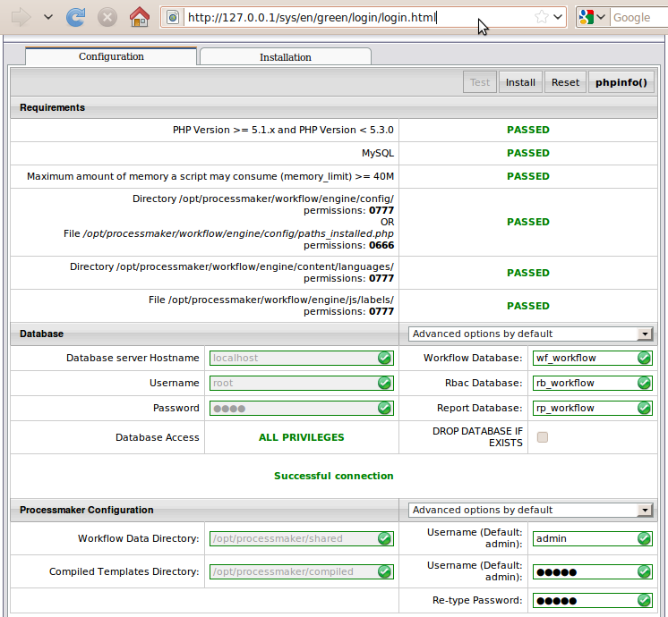

Overview
Follow these generic instructions to install ProcessMaker 2.0 on a server running Linux or UNIX or Windows (XP, Server 2003, Vista, 7, 8 or Server 2008). Before installing ProcessMaker, check its Installation Requirements. After installation, see Additional Server Configuration.
Installing ProcessMaker
1. Go to http://sourceforge.net/projects/processmaker/files and download a recent tarball of ProcessMaker, which should be named processmaker-2.X.X.tar.gz The versions are numbered according to the pattern MAJOR.MINOR.REVISION, such as "2.0.36". 2. Move the processmaker-2.X.X.tar.gz file which was downloaded to the directory in your server where the ProcessMaker application will be stored. ProcessMaker can be installed in any directory which is not publicly accessible to the internet (so do NOT install it in /var/www in Linux/UNIX).
In Linux/UNIX, it is generally installed in the /opt directory, since it is an optional program which doesn't come from the standard repositories. In Windows XP and Server 2003, it is generally installed in the C:\Program Files directory.
In Windows Vista, 7, 8, and Server 2008, it is generally installed in the local directory of a user, such as C:/Users/USERNAME/processmaker, due to the new security restrictions which do not allow Apache to write to the C:/Program Files directory.
tar -C /opt -xzvf processmaker-2.X.X.tar.gz
MS Windows:
Use WinRAR or 7-Zip to extract the file processmaker-2.X.X.tar.gz
This will create a new processmaker directory, containing all the ProcessMaker files and directories, which should have the following contents:
LICENSE.txt processmaker.bat README.txt workflow
Setting File Permissions
After decompressing the ProcessMaker code, several of the subdirectories need to be made writable, so ProcessMaker running on Apache can write to them.
Linux/UNIX:chmod -R 770 shared
cd <INSTALL-DIRECTORY>/processmaker/workflow/engine/
chmod -R 770 config content/languages plugins xmlform js/labels
From version 2.0.40 give write permissions to:
From version 2.5.0 give write permissions to:
chmod -R 770 <INSTALL-DIRECTORY>/processmaker/gulliver/thirdparty/html2ps_pdf/cache
Then, change the owner of the ProcessMaker files to the user who runs Apache. The name of this user varies from distribution to distribution:
Red Hat/CentOS/Fedora:chown -R apache:apache <INSTALL-DIRECTORY>/processmaker
Debian/Ubuntu:
chown -R www-data:www-data <INSTALL-DIRECTORY>/processmaker
SUSE/OpenSUSE:
Make the following directories writable. Right click on the following directories and choose the option Properties from the dropdown menu. In the "Properties" window, uncheck the option Read only:
<INSTALL-DIRECTORY>\processmaker\compiled
<INSTALL-DIRECTORY>\processmaker\workflow\engine\config\
<INSTALL-DIRECTORY>\processmaker\workflow\engine\content\languages\
<INSTALL-DIRECTORY>\processmaker\workflow\engine\js\labels\
<INSTALL-DIRECTORY>\processmaker\workflow\engine\plugins\
<INSTALL-DIRECTORY>\processmaker\workflow\engine\xmlform\
<INSTALL-DIRECTORY>\processmaker\workflow\engine\plugins\
From version 2.0.40 on, make the following directory writable:
From version 2.5.0 on, make the following directories writable:
<INSTALL-DIRECTORY>/processmaker/gulliver/thirdparty/html2ps_pdf/cache
The last two are necessary to generate Output Documents.
Apache Configuration
Edit the file <INSTALL-DIRECTORY>/processmaker/etc/pmos.conf with a plain text editor (such as Notepad or Notepad++ in Windows or vim, nano or gedit in Linux/UNIX).
Modify the following virtual host definition to match your environment:
# the ServerName with you own subdomain for ProcessMaker.
NameVirtualHost your_ip_address
#processmaker virtual host
<VirtualHost your_ip_address >
ServerName "your_processmaker_domain"
DocumentRoot /opt/processmaker/workflow/public_html
DirectoryIndex index.html index.php
<Directory "/opt/processmaker/workflow/public_html">
AddDefaultCharset UTF-8
AllowOverRide none
Options FollowSymlinks
Order allow,deny
Allow from all
RewriteEngine on
RewriteRule ^.*/(.*)$ sysGeneric.php [NC,L]
ExpiresActive On
ExpiresDefault "access plus 1 day"
ExpiresByType image/gif "access plus 1 day"
ExpiresByType image/png "access plus 1 day"
ExpiresByType image/jpg "access plus 1 day"
ExpiresByType text/css "access plus 1 day"
ExpiresByType text/javascript "access plus 1 day"
AddOutputFilterByType DEFLATE text/html
</Directory>
</VirtualHost>
Note: If using Apache 2.4, then change the following line from:
Allow from all
To:
Also make sure that the Apache filter module is enabled in Apache 2.4 in order to prevent errors with the following line:
Replace your_ip_address with the IP number or domain name of the server running ProcessMaker. If only planning on running and accessing ProcessMaker on your local machine, then use the IP address "127.0.0.1". If using ProcessMaker on a machine whose IP address might change (such as a machine whose IP address is assigned with DHCP), then use "*", which represents any IP address. If not using the standard port 80, then it is necessary to also specify the port number.
If your DNS or /etc/hosts has a defined domain for ProcessMaker, then use that domain for your_processmaker_domain. Otherwise, use the same IP address for your_processmaker_domain as was used for your_ip_address.If ProcessMaker is installed in a location other than /opt/processmaker/ , then edit the paths to match where Processmaker is installed on your system.
For example, if running ProcessMaker on a Windows XP server at address 192.168.1.100 on port 8080 with a domain atprocessmaker.mycompany.com:
#processmaker virtual host
<VirtualHost 192.168.1.100:8080 >
ServerName "processmaker.mycompany.com"
DocumentRoot C:\Program Files\processmaker\workflow\public_html
DirectoryIndex index.html index.php
<Directory "C:\Program Files\processmaker\workflow\public_html">
...
For example, if running ProcessMaker on a Linux server at address server1.example.com with a domain at pm.example.com:
#processmaker virtual host
<VirtualHost server1.example.com >
ServerName "pm.example.com"
DocumentRoot /opt/processmaker/workflow/public_html
DirectoryIndex index.html index.php
<Directory "/opt/processmaker/workflow/public_html">
...
For example, if ProcessMaker is installed in the "/home/fred" directory on your local machine at port 8080 with an dynamic IP assigned by DHCP:
#processmaker virtual host
<VirtualHost *:8080 >
ServerName "*"
DocumentRoot /home/fred/processmaker/workflow/public_html
DirectoryIndex index.html index.php
<Directory "/home/fred/processmaker/workflow/public_html">
...
Note: It is also possible to define the virtual host for ProcessMaker directly in the Apache configuration by inserting the above VirtualHost definition in the Apache configuration file, which is generally named httpd.conf.
Then, copy the pmos.conf file to the following directory, where it will automatically be loaded by the Apache web server:
Generic Linux/UNIX:
Debian/Ubuntu:
Then issue the command:
Windows:
If using Windows, add the following line to the httpd.conf file, so that the ProcessMaker virtual configuration can proceed:
Note: If Apache is using the default port 80, then configure Skype and other programs to not use port 80. You can check whether a program is currently listening on port 80 with netstat -anb in Windows or netstat -tanp in Linux/UNIX.
To configure Skype to stop listening on port 80, go to Tools > Options. Under the Advanced section of the "Options" dialog box, select the Connection tab. Deselect the option Use port 80 and 443 as alternatives for incoming connections.
ProcessMaker Configuration
Open a web browser and enter the IP address (and port number if not using the default port 80) where ProcessMaker is installed. For instance, if ProcessMaker is installed at the address 192.168.10.100 with port 8080, then go to: http://192.168.10.100:8080
If using ProcessMaker on the local machine, then go to: http://127.0.0.1
The installation configuration page should appear to setup ProcessMaker. If the default Apache page appears, then first disable it and try again.
In the configuration page, enter in the username and password to access MySQL. This should be a user such as "root" who has privileges to create new MySQL databases. Click on the Test button to verify that ProcessMaker is configured properly. Green checkmarks will indicate that the settings work correctly:
\To change a setting after clicking Test, click on Reset. To change the default administrator username and password, select the option in the ProcessMaker Configuration section.
Important! The “admin” user will be able to access to all the features and functionality in your ProcessMaker installation, such as: system configuration, processes creation and editing, user and group management, case management, and report and dashboard oversight among others. Thus, it is strongly recommended you take care to configure a difficult-to-guess password for this account. Take a look at this list of password dos and don’ts. You may also consider using a strong password generator like this one.
Once all the settings are properly configured click on Install to install processmaker. The installation screen should indicate SUCCESS. If errors arise, please check the file <INSTALL-DIRECTORY>/shared/log/install.log and visit the Processmaker forum to get support.
At the login screen, enter the Username of "admin" and the Password of "admin" and the Workspace name, which by default is "workflow". Once logged, it is strongly recommended to change the administrator credentials.
To login with a different workspace, language or skin, see the Login section.
If the ProcessMaker configuration screen appears the next time you try to login, press CTRL+SHIFT+r or CTRL+F5 to clear the web browser's cache.
Note: It is a good idea to reset the administrator's password to something more secure in the future before using ProcessMaker in production.
Additional Configuration
Additional aspects of ProcessMaker may need to be configured. See Additional Server Configuration and the Configuration section of the wiki. Most installations of ProcessMaker need to configure the following:
Setting the Time Zone
In ProcessMaker version 2.0.29 and later, the default time zone for the ProcessMaker server is set in the env.ini configuration file. If using a previous version of ProcessMaker, see Default Time Zone.
Configuring Email
If planning on sending out email notifications or enabling users to recover forgotten passwords, then see Email - Settings to configure ProcessMaker to use an email server.
Execution of cron.php
If planning on using email notifications, events or the case scheduler, then the server running ProcessMaker has to be configured to periodically execute the cron.php file. See Executing cron.php.
Errors during Installation
If an error occurs during the installation, check the installation log file:
Depending on the errors found in the installation log file, check the following files:
The Apache configuration file:
The ProcessMaker web site configuration file for Apache:
The PHP configuration file:
The MySQL configuration file:
The ProcessMaker configuration file where components are installed:
The ProcessMaker configuration file for database connections:
The ProcessMaker redirection to login screen:
If the following error appears at the login screen:

This error indicates that the installer was unable to access the MySQL databases to install the translations. Make sure that the MySQL port (which is 3306 by default) isn't blocked by a firewall and MySQL is configured to accept connections from the server running Processmaker.
If the following error occurs during the "finalizing" stage on the wizard:
Add the following line inside the my.cnf file: